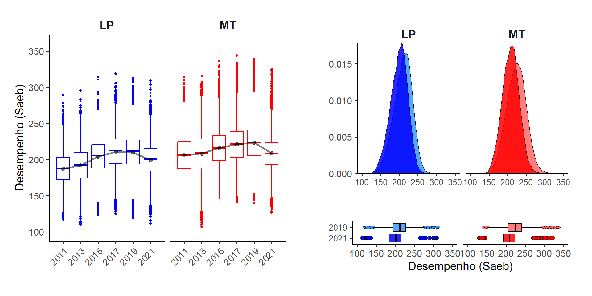

Apresentação de case de pesquisa
Processo seletivo: [UTLRV3] SENAI
Cargo: Especialista em Educação Profissional – Supervisão de Avaliação
Local: São Paulo – SP
Edital Nº: 283-2025
Candidato: Victor Gabriel Alcantara da Silva
Terça-feira, 20 de maio de 2025 — 09:30 (América/São Paulo)
Impactos da pandemia
Queda de aprendizado e a capacidade de mitigação das escolas
Brasil, 5º ano do ensino fundamental
Autores
Adriano S. Senkevics (Ipea) e Victor G. Alcantara (USP)
üìÖ Linha do tempo da pesquisa ‚Äúrel√¢mpago‚Äù
Contexto e questões do estudo
Efeito da pandemia da Covid-19 sobre a aprendizagem nos anos iniciais do ensino fundamental
Capacidade de mitigação dos efeitos pelos recursos mobilizados pelas redes e escolas
Fatores agravantes da pandemia
- Suspensão das aulas presenciais;
- Disponibilidade e mobilização de recursos em resposta ao contexto.
Destaques da literatura nacional
- Resposta desigual na mobilização de recursos (Barberia, Cantarelli, and Schmalz 2021; Bof, Viana Basso, and Dos Santos 2022)
- Variação no tempo de reação e suspensão das atividades presenciais (Lichand et al. 2022; Koslinski and Bartholo 2021)
Questões investigadas
- Qual foi a dimensão do efeito da pandemia na queda no desempenho?
- A pandemia ampliou desigualdades?
- Os recursos mobilizados pelas escolas foram capazes de mitigar a queda?
Dados
1. Censo Escolar e Suplemento Covid-19 do Censo Escolar (2020–2021)
Informações sobre o fechamento das escolas e as estratégias adotadas pelas escolas/secretarias de educação para a continuidade das atividades de ensino e aprendizagem.
2. Sistema de Avaliação da Educação Básica (2011–2021)
Conjunto de avaliações externas em larga escala que permite a realização de um diagnóstico da educação básica brasileira e de fatores que podem interferir no desempenho do estudante.
Desempenho dos estudantes e a média das escolas em Matemática (MT) e Língua Portuguesa (LP), além do questionário socioeconômico contextual e outros itens.
Metodologia
Análise descritiva exploratória
Diferenças-em-diferençasEscore de propensão ao pareamentoModelos de regressão linear múltipla
Variação no desempenho: efeito da pandemia
Variação no desempenho: efeito da pandemia
Betthäuser, Bach-Mortensen, and Engzell (2023)
Variáveis explicativas
Tempo de funcionamento presencial (2020–2021)
2020
Média do tempo de reação: 40 dias
Média de suspensão das atividades presenciais: 287 dias (praticamente todo o ano letivo)
32% das escolas não conseguiram concluir o calendário escolar e estenderam o ano letivo para 2021
2021
Média de 109 dias em formato remoto
Média de 116 dias em formato híbrido
Média de 43 dias em formato presencial
Nivelamento por baixo


Modelo de regressão múltipla
\[ \boldsymbol{Y_{queda}} = \beta_0 + \beta_1 \cdot \text{Desempenho 2019} + \boldsymbol{\beta_2 \cdot \text{IRP}} + \beta_3 \cdot \text{Tempo presencial} + \beta_4 \cdot \text{NSE} + \beta_5 \cdot \text{Dep. Adm.} + \beta_6 \cdot \text{Área} + \varepsilon \]
Variável a ser explicada (dependente): queda no desempenho
Variáveis explicativas (independentes):
Desempenho em 2019, IRP, Tempo presencial, NSE, Dep. Adm. e Área
Resultados dos modelos
Conclusões
- Coorte afetada pela pandemia: queda no desempenho do 5º EF entre as maiores observadas pela literatura internacional
- O sistema foi nivelado por baixo: escolas com maior desempenho tiveram maior impacto
- Escolas em níveis críticos de desempenho: pouco impacto da pandemia, pouca diferença
- Intensificação das desigualdades: maior queda entre escolas que atendem alunos mais pobres, especialmente de alto desempenho
- Os recursos tiveram pouco efeito na mitigação da queda no desempenho
Repercussão pública e acadêmica
- üì∞ Imprensa nacional:
- üìÑ Publica√ß√µes acad√™micas:
- üìö Cita√ß√µes e discuss√µes acad√™micas:
- O estudo tem sido referenciado em trabalhos acadêmicos e discussões sobre os impactos da pandemia na educação básica brasileira, incluindo análises sobre desigualdades educacionais e eficácia das respostas institucionais.
Muito obrigado pela atenção!
üìß E-mail
üìö Perfis acad√™micos
ORCID: 0000-0001-8846-9652
Lattes: 6579920248903712
Google Scholar
üåê Redes e reposit√≥rios
Referências bibliográficas
Barberia, Lorena G, Luiz G R Cantarelli, and Pedro Henrique de Santana Schmalz. 2021. “Uma avaliação dos programas de educação pública remota dos estados e capitais brasileiros durante a pandemia do COVID-19.” Rede, Políticas Públicas e Sociedade. http://fgvclear.org/site/wp-content/uploads/remote-learning-in-the-covid-19-pandemic-v-1-0-portuguese-diagramado-1.pdf.
Betthäuser, Bastian A., Anders M. Bach-Mortensen, and Per Engzell. 2023. “A Systematic Review and Meta-Analysis of the Evidence on Learning During the COVID-19 Pandemic.” Nature Human Behaviour 7 (3): 375–85. https://doi.org/10.1038/s41562-022-01506-4.
Bof, Alvana Maria, Flavia Viana Basso, and Robson Dos Santos. 2022. “Impactos da pandemia na alfabetização das crianças brasileiras.” Cadernos de Estudos e Pesquisas em Políticas Educacionais 7 (December). https://doi.org/10.24109/9786558010630.ceppe.v7.5573.
Koslinski, Mariane Campelo, and Tiago Lisboa Bartholo. 2021. “A pandemia e as desigualdades de oportunidades de aprendizagem na educação infantil.” Estudos em Avaliação Educacional 32 (December): e08314. https://doi.org/https://doi.org/10.18222/eae.v32.8314.
Lichand, Guilherme, Carlos Alberto Doria, Onicio Leal-Neto, and João Paulo Cossi Fernandes. 2022. “The Impacts of Remote Learning in Secondary Education During the Pandemic in Brazil.” Nature Human Behaviour 6 (8): 1079–86. https://doi.org/https://doi.org/10.1038/s41562-022-01350-6.